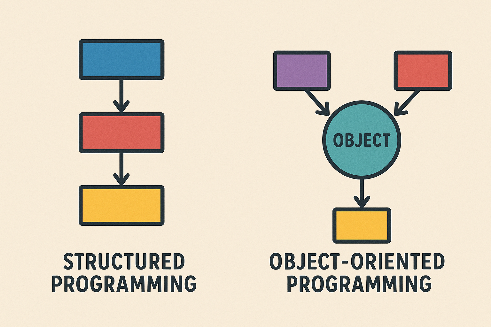

Introducción a la Programación Orientada a Objetos¶
Paradigmas de programación¶

En programación, un paradigma es un enfoque concreto de desarrollar y estructurar el desarrollo de programas
Hasta ahora hemos aprendido a programar utilizando el paradigma imperativo o de programación estructurada
No es el único paradigma que existe. Hay otros como:
- Funcional
- Orientado a objetos
Paradigma de la programación imperativa o estructurada¶
Consiste en una secuencia de instrucciones que el ordenador debe ejecutar.
Los elementos más importantes en esta forma de programar son:
-
Variables: zonas de memoria donde guardamos información.
-
Tipos de datos: son los valores que se pueden almacenar.
-
Expresiones: corresponde a operaciones entre variables (del mismo o distinto tipo)
-
Estructuras de control:
- Secuenciales: ejecución de instrucciones de forma consecutiva
- Bucles: permiten ejecutar un conjunto de instrucciones varias veces
- Condicionales: ejecutar una parte del código u otra en función de que se cumpla una condición o abortar la ejecución del programa.
Paradigma de la programación orientada a objetos¶
Se basa en la idea de agrupación de datos y funciones relacionados en "unidades" de información.
El tipo de datos nuevo que permite agrupar datos y funciones se llama clase
A cada variable de tipo clase se le denomina objeto
Ventajas de la POO¶
La POO no es mejor ni peor que otros paradigmas. Cada paradigma es más o menos útil en función del tipo de problema que queremos solucionar.
Algunas ventajas de la POO son:
- Encapsulación de datos: los datos y las operaciones para modificarlos pertenecen al objeto y solo son accesibles desde el mismo.
-
Simplicidad: la creación de grandes sistemas es una tarea compleja, con muchos problemas que resolver. La capacidad de dividir la complejidad en problemas más pequeños, en objetos permite simplificar la tarea global.
-
Facilidad de modificación: cuando se basa en objetos y modela el sistema con ellos, es más fácil realizar el seguimiento de qué partes del sistema se deben modificar. Todo esto facilita la corrección de errores o agregar una característica nueva.
- Capacidad de mantenimiento: en general, el mantenimiento del código es difícil y con el tiempo se complica más. Requiere disciplina en forma de una nomenclatura correcta y una arquitectura clara y coherente, entre otros aspectos. El uso de objetos facilita la búsqueda de un área concreta del código que necesita mantenimiento.
- Reusabilidad: la definición de un objeto se puede usar muchas veces en muchas partes del sistema o, potencialmente, también en otros sistemas.
Clases¶
Una clase es una entidad que define una serie de elementos que determinan un estado (datos) y un comportamiento (operaciones sobre los datos que modifican su estado).
Hemos visto que python define una serie de tipos de datos primitivos incluidos con el lenguaje. Los hemos utilizado al definir variables (int, float, str, list, tuple, ....)
Cuando creamos una clase estamos definiendo un nuevo tipo de dato.
Para crear una clase en Python usamos la palabra reservada class
Una clase básica la podemos crear en Python de la siguiente forma:
Por convención se usa notación CamelCase a la hora de asignar nombres a las clases. Esta notación consiste en poner en mayúscula el primer carácter del nombre de la clase. Si el nombre tiene varias palabras se ponen juntas sin espacios y con el primer carácter de cada palabra en mayúscula (Ejemplo
CocheCarrerasFormula1)
Creación de objetos¶
Una clase es un molde, una plantilla, un tipo de dato definido por el programador.
Un objeto es una variable del tipo de la clase que hemos definido.
En Python creamos un objeto asignando a una variable la clase que hemos definido:
Con la asignación anterior hemos creado un objeto de la clase Coche. A este proceso se le denomina instanciar o crear una instanciaPodemos crear todos los objetos de una clase que queramos:
Añadir atributos a una clase¶
Los atributos o datos encapsulados en un objeto se crean cuando se crea una instancia de un objeto.
Hay una función especial a la que se llama en el momento de la creación, denominada constructor.
Constructor¶
Un constructor es una función especial que solo se invoca al crear por primera vez el objeto. Por tanto, el constructor solo se llamará una vez.
En este método, se crean los atributos que debe tener el objeto. Además, se asignan valores iniciales a los atributos creados.
Por tanto, este método es el encargado de crear el estado inicial de un objeto,
En Python, el constructor tiene el nombre __init__().
A __init__() le podemos dar el número de parámetros que queramos, pero el primer parámetro de __init__() debe ser siempre una variable especial de nombre self que hace referencia al propio objeto y permite que le añadamos atributos al objeto:
La indentación de
defes la que permite saber a Python que el método__init__()pertenece a la claseCoche.
En el cuerpo de __init__() hay dos instrucciones que usan la variable self:
* self.color = color crea el atributo de nombre color y asigna al mismo el valor del parámetro color
* self.velocidad = velocidad crea el atributo de nombre velocidad y asigna al mismo el valor del parámetro velocidad
Si ahora queremos crear un objeto de la clase Coche de la misma forma:
coche = Coche()
TypeError: __init__() missing 2 required positional arguments: 'color' and 'velocidad'
Python devuelve un error indicando que debemos pasar dos parámetros al crear el objeto.
Acabamos de crear dos instancias de la clase Coche: el objeto coche_rojo, un coche rojo que circula a 20 Kmh, y el objeto coche_blanco, que representa a un coche de color blanco que circula a 30 Kmh
Fíjate que aunque
__init__()tiene 3 parámetros solo hemos pasado 2 al crear el objeto; Python se encarga de pasar de forma automáticaselfen el momento de llamar al constructor y no debemos pasarlo como parámetro.
Después de crear un objeto podemos acceder a sus atributos usando notación punteada
Atributos de clase¶
Los atributos que acabábamos de definir se llaman atributos de instancia y son específicos de cada objeto en el momento de crearlos.
Python permite definir también atributos de clase, son atributos que tienen el mismo valor en todos los objetos que creemos en una determinada clase.
Se crean asignando valor a una variable fuera del método __init__(). Dichas variables deben estar indentadas y ubicadas al principio de la definición de la clase. Además deben inicializarse.
Por ejemplo, todos los coches tienen en común tener 4 ruedas:
class Coche:
# Atributos de clase
ruedas = 4
def __init__(self, color, velocidad):
# Atributos de instancia
self.color = color
self.velocidad = velocidad
Con la notación punteada podemos acceder también a los atributos de clase
También podemos acceder poniendo directamente el nombre de la clase:Los atributos de clase se suelen usar para representar información común a todas las instancias (constantes, configuración, contadores globales, etc.). Permiten cambiar un valor para todas las instancias modificándolo una sola vez en la clase.
Métodos de instancia¶
Los métodos de instancia son funciones definidas dentro de una clase y que solo pueden ser llamados desde un objeto de la clase.
El primer parámetro de un método, igual que en el constructor __init__() debe ser siempre self
Hemos añadido a la clase dos métodos de instancia:
descripcion()que devuelve una cadena mostrando el color y la velocidad del cocheacelera()que incrementa la velocidad del coche con el parámetro que le pasemos y devuelve una cadena de texto que informa de la nueva velocidad.
Para ejecutar los métodos de instancia usamos notación punteada.
>>> coche_rojo = Coche("rojo", 80)
>>> coche_rojo.descripcion()
'El coche tiene color rojo y una velocidad de 80 Kmh'
>>> coche_rojo.acelera(20)
'Nueva velocidad: 100 Kmh'
El método __str__()¶
Cuando creamos una clase es buena idea disponer de un método que permita mostrar la información relevante del objeto. En el caso anterior hemos creado un método de nombre descripcion() que realiza dicha función, pero esta no es la forma más "Pythonica" de hacerlo
Por ejemplo, si creamos una lista Python muestra una representación de la misma si usamos print() para mostrarla.
Sin embargo, si llamamos con print() un objeto que hayamos creado de la clase Coche obtenemos algo como:
Obtenemos un mensaje críptico que indica que coche_rojo es un objeto de la clase Coche y a continuación su dirección de memoria.
Podemos cambiar el resultado de print() sobre un objeto creando un método especial de nombre __str__().
Si para la clase anterior cambiamos el nombre del método descripcion() por __str__()ahora obtendremos un resultado más amigable al mostrar con print() el objeto:
Al ejecutar obtenemos:
El método __repr__¶
El método especial __repr__: debe devolver una representación textual del objeto, pensada principalmente para desarrolladores. A diferencia de __str__ que busca ser legible y amigable.
Se recomienda al implementar __repr__
- incluir el nombre de la clase
- mostrar los valores relevantes
- en lo posible, que sea válida como código Python
- usar comillas adecuadas para strings
- no debe ser demasiado larga, pero sí clara
Se recomienda:
- Utilizar siempre __repr__ en clases que se vayan a depurar o usar en logs.
- Utilizar __str__ si queremos una versión más amigable para usuarios finales.
Si la clase no define __str__, Python usa automáticamente __repr__.
Destructores (__del__) y limitaciones en Python¶
En la programación orientada a objetos existe un concepto llamado destructor. Un destructor es un método especial que se ejecuta automáticamente cuando un objeto es eliminado de la memoria.
En Python, ese método se llama __del__.
El objetivo del destructor es realizar tareas de limpieza antes de que el objeto desaparezca: cerrar conexiones, liberar recursos o escribir mensajes de cierre.
Ejemplo de destructor¶
Salida esperada:
Aquí, el método __del__ se ejecuta justo cuando el objeto deja de existir porque forzamos su ejecución con del.
Limitaciones del destructor en Python¶
Aunque el destructor existe, no siempre se comporta de forma predecible en Python. Esto se debe a cómo funciona el recolector de basura de este lenguaje:
- Momento incierto: no podemos saber con exactitud cuándo se destruirá un objeto. Puede ocurrir inmediatamente después de que deje de usarse, o más tarde.
- No garantizado al salir del programa: si el programa termina, algunos destructores pueden no ejecutarse.
- Referencias circulares: si dos objetos se referencian entre sí, el recolector puede no llamar a
__del__. - No recomendado para liberar recursos críticos: en Python es más seguro usar context managers (
with) para asegurar que se cierren ficheros o conexiones.
Ejemplo con with (más seguro que depender de __del__):
with open("datos.txt", "w") as f:
f.write("Hola")
# Aquí el fichero se cierra automáticamente al salir del bloque
Ciclo de vida de un objeto¶
El ciclo de vida de un objeto es el conjunto de etapas que atraviesa un objeto desde que se crea hasta que deja de existir en memoria.
1. Creación¶
Se crea un objeto a partir de una clase.
- Se reserva memoria para el nuevo objeto
- Se llama al constructor init para inicializar atributos
- El objeto recibe su identidad única
2. Uso¶
El objeto vive mientras haya referencias que lo apunten (variables, estructuras, retornos). Puede:
- almacenar datos (atributos)
- ejecutar métodos
- cambiar su estado interno
- interactuar con otros objetos
3. Alcance¶
Las variables locales mueren al salir de la función; variables globales viven hasta que el programa termina o se elimina la referencia.
Ejemplos de alcance local vs global:
Si crear_local() devolviera el objeto y lo guardáramos en otra variable, seguiría vivo porque conservaría una referencia. El recolector de basura de Python se encarga de liberar la memoria cuando ya no hay referencias al objeto.
4. Destrucción (finalización)¶
Un objeto deja de existir cuando ya no hay referencias que apunten a él. En Python, el recolector de basura (garbage collector) elimina los objetos que ya no pueden ser accedidos.
Esto puede suceder cuando:
- la variable que lo referenciaba cambia de valor
- el objeto sale de un ámbito (por ejemplo, una función)
- se elimina explícitamente una referencia con
del
Pero, como vimos, aunque el destructor existe, no siempre se comporta de forma predecible en Python.